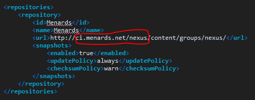

An online repository where our app builds get put on and where we can manually retreive specific builds onto our PC using maven
Do not use the nexus link here anymore http://buildserver.menards.net
Instead use the new link http://ci.menards.net/nexus/
When we do maven update in Eclipse to get our dependencies for that app, the dependency jars are pulled from nexus(online) into our local m2 folder. How this is done is that in each app's pom, you will see there is a repository tag provided so that maven knows where (URL) to pull the dependency jars from. change the url if our nexuses ever change location
If this is url is not corect in the pom, then your app will not be able to pull jars into your local m2 folder, which will cause missing dependency errors.
